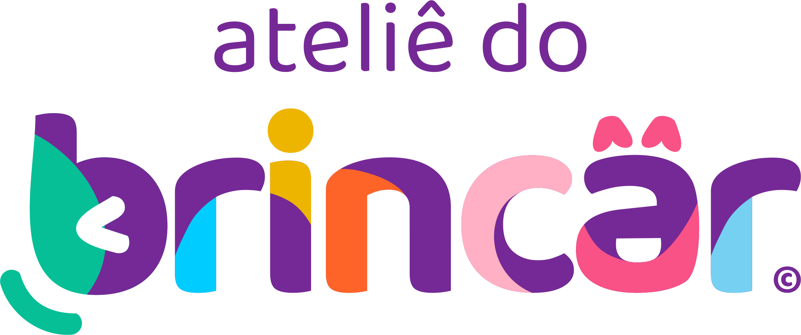

Site em construção
Estamos preparando um lugar para brincar por aqui também.
Nosso site novo está sendo construído com o mesmo cuidado que temos com cada criança do ateliê. Enquanto ele não fica pronto, a conversa continua — fale com a gente pelos canais de sempre.
Contribuir no desenvolvimento humano, na primeira infância, para construir uma sociedade feliz e equilibrada.